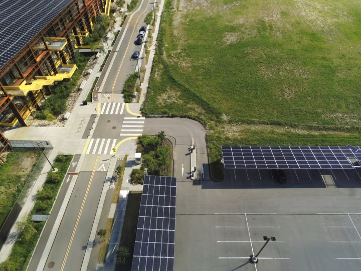
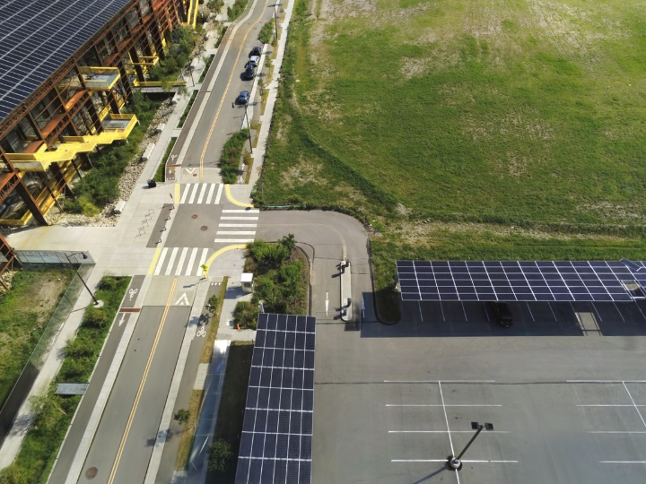

The recent advancements in 3D Gaussian Splatting (3DGS) have demonstrated remarkable potential in novel view synthesis tasks. The divide-and-conquer paradigm has enabled large-scale scene reconstruction, but significant challenges remain in scene partitioning, optimization, and merging processes. This paper introduces BlockGaussian, a novel framework incorporating a content-aware scene partition strategy and visibility-aware block optimization to achieve efficient and high-quality large-scale scene reconstruction. Specifically, our approach considers the content-complexity variation across different regions and balances computational load during scene partitioning, enabling efficient scene reconstruction. To tackle the supervision mismatch issue during independent block optimization, we introduce auxiliary points during individual block optimization to align the ground-truth supervision, which enhances the reconstruction quality. Furthermore, we propose a pseudo-view geometry constraint that effectively mitigates rendering degradation caused by airspace floaters during block merging. Extensive experiments on large-scale scenes demonstrate that our approach achieves state-of-the-art results in both reconstruction efficiency and rendering quality.
 
